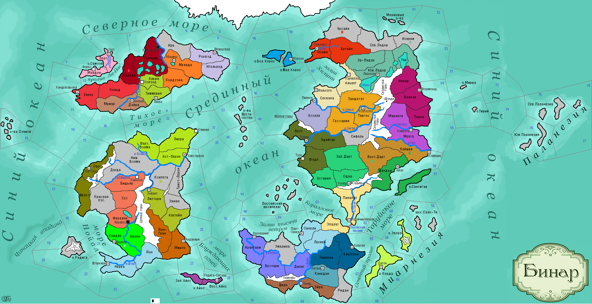

<==
| 3 |
| 4 |
| 5 |
| 6 |
| 7 |
| 8 |
| 9 |
| 10 |
| 11 |
==>

7-й ход истории мира Бинар (1130 г.)
· Князь Одегона Ульрик I умирает, забыв написать завещание… Безвластие спровоцировало восстание знати, поднявшей мятеж в столице.
· Князь Гейст I Вестервальдский передает власть в стране сыну Хайгену. Хайген I вводит феодализм и принимает титул герцога.
· Провинция Кордак подверглась нападению варваров с о.Радига.
· Княжество Штартизи объявляет войну Кордаве, обосновав её необходимость притеснением йонтов в провинции Авани. В ответ Кордава и Ферлустан заключают военный союз. Но армия йонтов вторгается в Кордак, разбивает вторгшихся варваров и оккупирует территорию.
· Разоренные земли Санктума со временем приходят к запустению… [АИ-страна ликвидирована]
· Каратанское учение принимает догмат Адорцизм, повышающее боевой дух его последователей.
· Войска Бьянфанга захватывают земли Урсайи.
· Гальта I принимает власть в Ферлустане. Нового правителя тоже не принимает народ, подняв против него восстание. Жрецы Ферлустана открывают руны.
· Армии Астерлии не смогли победить аборигенов в Ниж.Вэлме.
· Патаки начали кремировать своих усопших.
· На смену умершему князю Ульнара Ман Гю приходит его дочь Сина. Армия Ульнара повторно не может взять штурмом столицу своего врага – г.Кэймлин.
· Кражи невест входят в обычаи у бэрнов.
· Правитель Дарта Моран I умирает… Кому из трех своих сыновей он оставил трон – не известно.
· Кель I – новый правитель Ладориана. Ладорианцы захватывают земли Изарни.
· Армия Рубинара отбивает нападение варваров на Удайгар.
· Моэдас отказывается от военных репараций с Темпеста.
· На Загоррских рудниках вводятся первые элементы механизации труда. Селетийцы вводят традицию проведения ежегодных состязаний в стрельбе из лука и кулачных боёв.
· После того как государством Йонтари выпало управлять 10-му Шолштари, он впал в уныние и апатию.
· Основаны новые города: Карабела (Дюранддаль), Форкс (Скандия)